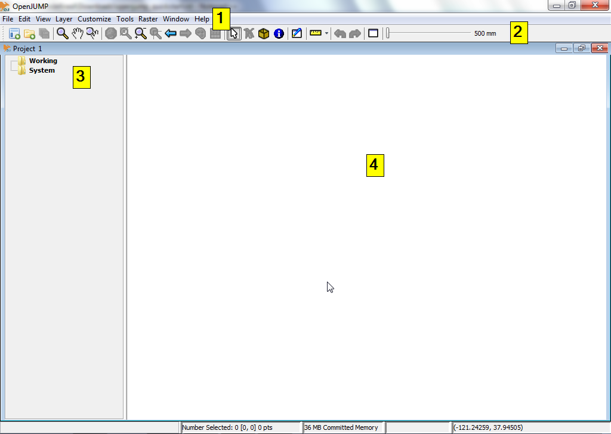

OpenJUMP GIS gyorstalpaló¶
Az OpenJUMP egy asztali GIS program vektor adatok egyszerű megjelenítését és szerkesztését teszi lehetővé. A PLUS kiadás a raszter adatok elemzését is támogatja.
Ez a gyorstalpaló a következőket írja le:
- ESRI shape fájl megnyitása OpenJUMP-al.
- A shape fájlból létrehozott réteg stílusának beállítása a könnyebb értelmezéshez.
- A réteg elemek geometriájának szerkesztése.
OpenJUMP indítása¶
OSGeo Live-DVD: indítsa az OpenJUMP ikont az asztalról vagy futtassa a /usr/bin/openjump parancsot
Windows-on menjen az OpenJump könyvtár bin mappájába és kattintson duplán az OpenJUMP.exe vagy az oj_windows.bat fájlra. Linuxon indítsa az oj_linux.sh fájlt egy terminálból. MacOSX-en kattintson az OpenJUMP alkalmazás szimbólumra.
(Kérjük vegye figyelembe: Egy Java futtatókörnyezet szükséges az OpenJUMP futttásához. A számítógépére letöltheti a Java futtatókörnyezetet innen: http://java.com/en/download/index.jsp)
Felhasználói felület alapszintű áttekintése¶
Az OpenJUMP felhasználói felülete négy (4) alapvető komponensből áll mint a legtöbb asztali GIS. (i) Az első a felső menüsor a legtöbb funkcionalitás eléréséhez. (ii) A második a fő eszköztár, mely a menüsor alatt helyezkedik el. A gombok hozzáférést biztosítanak a legfontosabb megjelenítési és navigációs funkciókhoz. (iii) A harmadik az aktív projekt réteg listáját tartalmazó baloldali fa nézet. (iv) A negyedik a térkép nézet. Ez az aktuális térkép, ahol minden réteg téradatainak grafikus reprezentációja található. Végül van egy információ sor az ablak alján, mely az aktuális egér koordinátákat, feldolgozási jelentéseket és a memória használatot jeleníti meg. Egy projekt ablak egy réteg listát és egy réteg nézetet tartalmaz. Minden OpenJUMP példány több projektet tartalmazhat. A gyorstalpalónkban egyetlen ablakkal fogunk dolgozni.
{kind=link}
ESRI shape fájl megnyitása¶
A gyorstalpaló ezen fejezete röviden elmagyarázza hogyan nyissunk meg egy ESRI shape fájlt.
Az OpenJUMP felső menüsorából válassza a [File] menüt. Majd válassza az [Open File…] opciót. Ez egy párbeszédablakot jelenit meg, melynek segítségével térinformatikai adatokat tartalmazó fájlt nyithat meg. A példánkban ESRI shape fájlok között fogunk tallózni. Keressen egy .shp kiterjesztésű fájlt (pl. e.g. on the LiveDVD under /home/user/data/natural_earth2/ne_10m_admin_0_countries.shp). Válassza ki a fájlt és kattintson a [Finish] gombra a párbeszédablakban. Néhány pillanat múlva láthatja a shape fájljából jövő adatokat a térképnézetben.Azt is láthatja, hogy egy új réteg réteg jött létre az adatokhoz a réteg listában. A réteg neve megegyezik a shape fájl nevével.

Egy másik gyorsabb lehetőség a shape fájl megragadása és rádobása a réteg nézetre.
Réteg stílus beállítás¶
A gyorstalpaló ezen fejezete röviden leírja hogyan állítsuk be egy réteg stílusát.
A réteg listában jobb gombbal kattintson a réteg nevére. Ez egy felbukkanó menüt jelenít meg. Menjen a [Style] menüelemre és válassza a [Change Styles…]-t. A stílus módosítás párbeszédablaknak öt (5) füle van, melyek lehetővé teszik, hogy megváltoztassa hogyan jelenjen meg a réteg a térkép nézetben. Ez magába foglalja a vonalszín, a kitöltési szín a vonalstílus és vonalvastagság megváltoztatását, címkék hozzáadását és a minimum és maximum méretarány meghatározását melyeknél a réteg megjelenik.
- A MacOSX felhasználók nyomják meg a Ctrl gombot a menü eléréséhez.


Térképi elemek geometriájának szerkesztése¶
A réteg listában jobb gombbal kattintson a réteg nevére mint az előző példában. Ez egy felbukkanó menüt jelenít meg. Kattintson az „Editable” menüpontra, így egy pipa jelenik meg. Ez egy új lebegő eszközsort jelenít meg a térkép nézet felett a jobb oldalon. Ez az eszközsor a gombok egy halmazát tartalmazza, melyeket a térképi elemek geometriájának szerkesztésére használhat.


Próbáljunk ki egy gyors szerkesztést. Először ki kell választanunk egy geometriát, majd a geometria egy pontját elmozdítjuk. Ehhez először kattintsunk az egér mutatót tartalmazó gombra a szerkesztés eszközsorban (bal-felső sarok). Kattintson egy elemre a Térkép nézetben a kiválasztásához. Ha a kiválasztás működött, akkor a térképi elem színe sárgára változik és az elem geometria valamennyi töréspontjában egy kis sárga négyzet jelenik meg.

Ezután kattintson a kék keresztet középen sárga négyzettel tartalmazó gombra, a Move Vertex Tool-ra (az egeret a gombokon tartva a gomb leírását kapjuk). Ha az egeret a térkép nézetbe húzza az egérmutató kis fekete keresztté változik.

Használjuk a korábban kiválasztott geometria egy töréspontjának mozgatására, kattintson egy töréspontra és húzza el azt (hagyja az egérgombot nyomva).

További tanulási források, az OpenJUMP-hoz¶
Ez csak az első lépés az úton az OpenJUMP használatához. Sokkal több anyag maradt, amit felfedezhet.
Az OpenJUMP-hoz oktatóanyagokat innen tölthet le: http://sourceforge.net/projects/jump-pilot/files/Documentation/
Az OpenJUMP wikit itt olvashatja: http://ojwiki.soldin.de/index.php?title=Main_Page
És gyorsan segítséget kaphat az OpenJUMP felhasználók levelező listáján: http://groups.google.com/group/openjump-users
Végül a legújabb OpenJUMP verziót itt található: http://sourceforge.net/projects/jump-pilot/files/OpenJUMP/